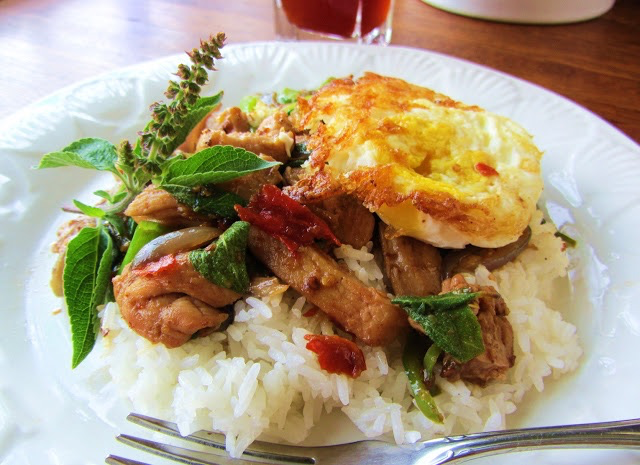
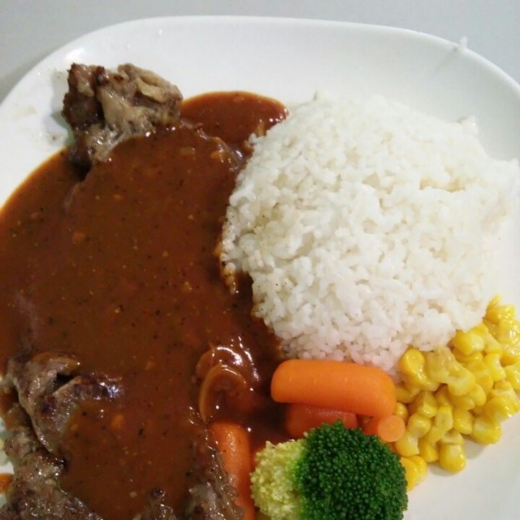

<ion-header>
  <ion-navbar>
    <ion-title>Back to Cuisines</ion-title>
  </ion-navbar>
</ion-header>


<ion-content>
  
  <ion-item-divider>
    <ion-item text-wrap>
      <ion-thumbnail item-right>
        <div class = "resimage">
          
        </div>
      </ion-thumbnail>
      <h1>{{resObj.Name}}</h1>
      <h1>Rating: {{resObj.Rating}}</h1>
      <h2>Description:</h2>
      <h3>
        <p>
          {{resObj.Description}}
        </p>
      </h3>
    </ion-item>
  </ion-item-divider>

  <ion-list *ngFor = "let dish of dishes_as_array">
    <ion-item-divider>
      <ion-item text-wrap>
        <ion-thumbnail image-start>
          
        </ion-thumbnail>
        <h2>{{dish.Name}}</h2>
        <h3>Authenticity : {{dish.Rating}} </h3>
        <h4>Price: {{dish.Price}} </h4>
        <h5>Allegies: {{dish.Allergies}} </h5>
      </ion-item>
    </ion-item-divider>
  </ion-list>

</ion-content>

<!--

*ngFor = "let dish of resObj.$Dishes | async"


<ion-item text-wrap>
  <ion-img width = "72" height ="271" src="../../assets/img/{{ (restaurant_obj | async)?.Path}}" cache ="true" item-right>
</ion-img>

        <h1>{{ (restaurant_obj| async)?.Name}}</h1>
        <h1>Rating: {{ (restaurant_obj | async)?.Rating}}</h1>
        <h2>Description:</h2>
        <h3><p>
          Joy Yee Noodle opened in Evanston in
        1994 and our second location in Chinatown Square in 1996. We were
        the first in the midwest to offer Taiwanese style bubble teas.
        Going a step further, Joy Yee’s was the first to combine
        the South Asian fresh fruit freezes(smoothies) with the popular
        tapioca balls.
       </p>
     </h3>
</ion-item>

<ion-item text-wrap>
  <ion-img width = "72" height ="271" src="../../assets/img/{{ (restaurant_obj | async)?.Path}}" cache ="true" item-right>
</ion-img>

        <h1>{{ (restaurant_obj| async)?.Name}}</h1>
        <h1>Rating: {{ (restaurant_obj | async)?.Rating}}</h1>
        <h2>Description:</h2>
        <h3><p>
          Joy Yee Noodle opened in Evanston in
        1994 and our second location in Chinatown Square in 1996. We were
        the first in the midwest to offer Taiwanese style bubble teas.
        Going a step further, Joy Yee’s was the first to combine
        the South Asian fresh fruit freezes(smoothies) with the popular
        tapioca balls.
       </p>
     </h3>
</ion-item>


Joy Yee’s offers an extensive list of appetizers
including list of broths, noodles, meats and other
fillers from which they can concoct soups suited to their
tastes.This diverse Asian cuisine flows into the main
courses as well, and the menu of entrees is vast.
Diners can choose between dozens of dishes, ranging from the
most traditional Asian favorites to innovative new twists on classic
recipes. We pride ourselves on offering new and exciting dishes


<ion-item-divider>
<ion-list>
 <ion-list-header>Top three authentic dishes</ion-list-header>

<ion-item text-wrap (click) = 'showDish1Details()'>
 
 <h2>Spicy Basil Chicken with Fried Egg</h2>
 <p>Authenticity: 95%</p>
 <p>Price: $10.55</p>
</ion-item>

<ion-item text-wrap (click) = 'showDish2Details()'>
 
 <h2>Black Pepper Beef</h2>
 <p>Authenticity: 90%</p>
 <p>Price: $10.55</p>
</ion-item>

</ion-list>
</ion-item-divider>

-->


